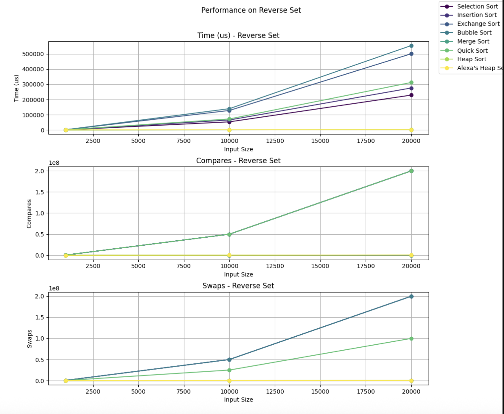
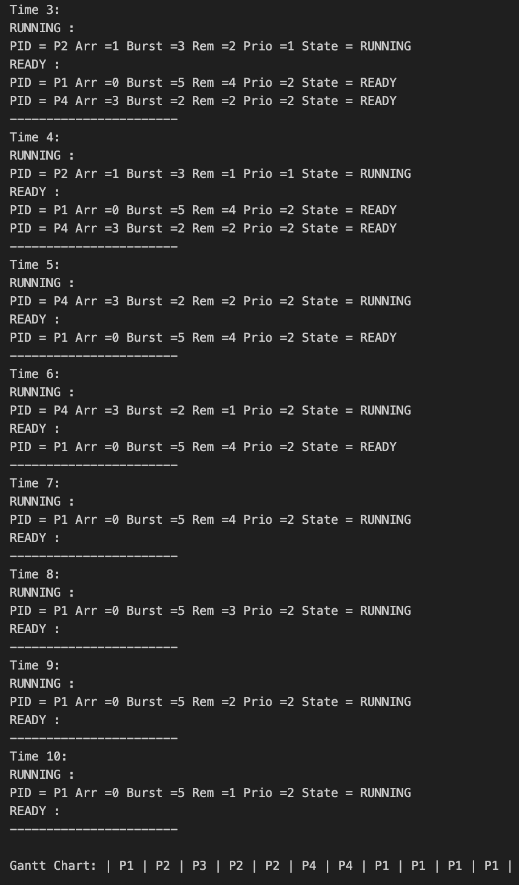
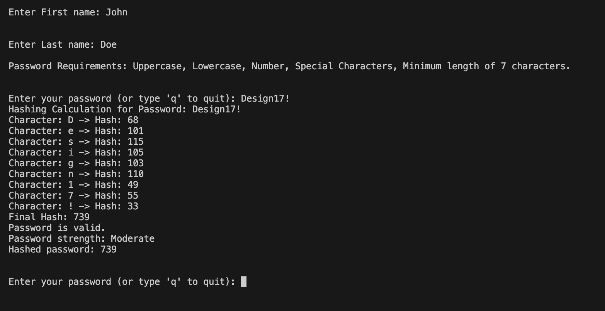

Featured Projects
A showcase of my work in Cybersecurity and Software Engineering
Adv Data Structures/Algo Dev - Group Sorting
The Group Sorting Project evaluates and compares the performance of several sorting algorithms, including Bubble, Merge, Selection, Insertion, Exchange, Heap, and Quick sort. Each group member implemented specific algorithms, which were later combined into a single project. The program reads datasets into memory, runs each sorting algorithm on different types of datasets (sorted, reverse sorted, random, and duplicate-heavy), and measures performance metrics such as comparisons, swaps, and execution time. Results are recorded and later analyzed and visualized using Python and R to compare algorithm efficiency across different data sizes and distributions.

Operating Systems - CPU Scheduling Simulator
This project involves building a CPU scheduling simulator that models how an operating system manages processes using several classic scheduling algorithms: FCFS, SRTF, Priority, and Round Robin. Each process is represented by a Process Control Block (PCB) containing information such as process ID, arrival time, burst time, remaining time, priority, and state. The simulator runs in discrete time units, updating process states as they move from secondary memory (NEW) to the ready queue (READY), to the CPU (RUNNING), and finally to termination (TERMINATED). At every time unit, the program prints a full PCB trace showing the currently running process and all processes in the ready queue. The project also includes a manual scheduling analysis, where Gantt charts and timing metrics (waiting, turnaround, and response times) are calculated by hand.

Adv Data Structures/Algo Dev - Hashing Passwords Project
This project focuses on using ASCII values and hashing techniques to evaluate password security. The program prompts users to create a password and checks whether it meets specific security requirements, such as containing uppercase letters, lowercase letters, numbers, and special characters, as well as meeting a minimum length. It also prevents users from including personal information such as their first or last name in the password. The system converts the password into a hash value using a custom hashing function based on ASCII character values, allowing passwords to be stored securely rather than in plain text. The program also evaluates the strength of the password (Weak, Moderate, or Strong) based on its complexity. Additional security features include rate limiting to slow repeated attempts and estimating resistance to brute-force attacks.

#include <iostream>
#include <string>
#include <cctype>
#include <vector>
#include <unordered_set>
#include <numeric>
#include <chrono>
#include <thread>
using namespace std;
unsigned int enhancement(const string& password)
{
vector<unsigned int> hashnum;
const unsigned int prime1 = 1;
const unsigned int prime2 = 0;
unsigned int hash = 0;
cout << "Hashing Calculation for Password: " << password << "\n";
for (char ch : password)
{
unsigned int hashValue = (prime1 * ch + prime2) % 5000;
hashnum.push_back(hashValue);
}
hash = accumulate(hashnum.begin(), hashnum.end(), 0u, [](unsigned int acc, unsigned int val) -> unsigned int
{
return (acc * prime1 + val) % 5000;
});
return hash;
}
bool validatity(const string& password, const string& firstName, const string& lastName, string& feedback)
{
feedback = "";
if (password.length() < 7) return false;
if (password.find(firstName) != string::npos || password.find(lastName) != string::npos) return false;
bool hasUpper = false, hasLower = false, hasDigit = false, hasSpecial = false;
for (char ch : password)
{
if (isupper(ch)) hasUpper = true;
else if (islower(ch)) hasLower = true;
else if (isdigit(ch)) hasDigit = true;
else if (ispunct(ch)) hasSpecial = true;
}
return hasUpper && hasLower && hasDigit && hasSpecial;
}
int main()
{
unordered_set<unsigned int> hashedPasswords;
string firstName, lastName, password;
cout << "\nEnter First name: ";
getline(cin, firstName);
cout << "\nEnter Last name: ";
getline(cin, lastName);
while (true)
{
cout << "\nEnter password (or 'q' to quit): ";
getline(cin, password);
if (password == "q") break;
string feedback;
if (validatity(password, firstName, lastName, feedback))
{
unsigned int hashedPassword = enhancement(password);
hashedPasswords.insert(hashedPassword);
cout << "Hashed password: " << hashedPassword << "\n";
}
}
return 0;
}